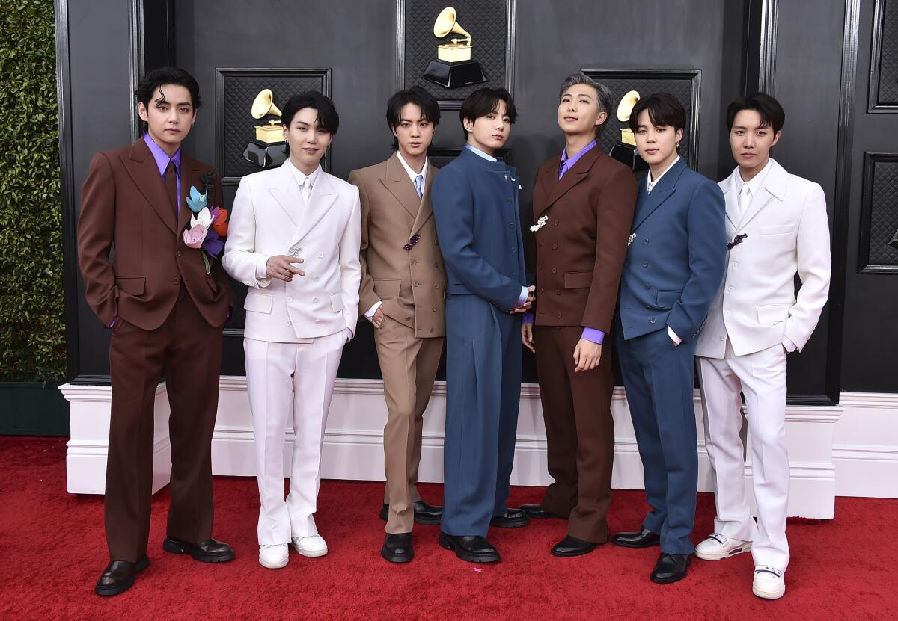

BTS (Bangtan Sonyeondan) es un grupo de K-pop de Corea del Sur. Debutaron el 13 de junio de 2013 y se convirtieron en el grupo más exitoso de la historia del K-pop, siendo los primeros artistas coreanos en llegar al número 1 del Billboard Hot 100 con "Dynamite" (2020).
Miembros

BTS en los Gramy Awards, 2020.
- RM – Líder y rapero principal
- Jin – Vocalista
- Suga – Rapero y productor
- J-Hope – Rapero y bailarín
- Jimin – Vocalista y bailarín
- V – Vocalista
- Jungkook – Vocalista principal
Historia
Logo oficial de BTS.
BTS debutó con el sencillo "No More Dream" bajo el sello Big Hit Entertainment. A diferencia de otros grupos, siempre escribieron y produjeron su propia música, hablando de temas como los sueños juveniles y la salud mental.
En 2018 dieron un discurso ante la Asamblea General de la ONU. Han sido reconocidos por la revista Time como personas más influyentes del mundo.